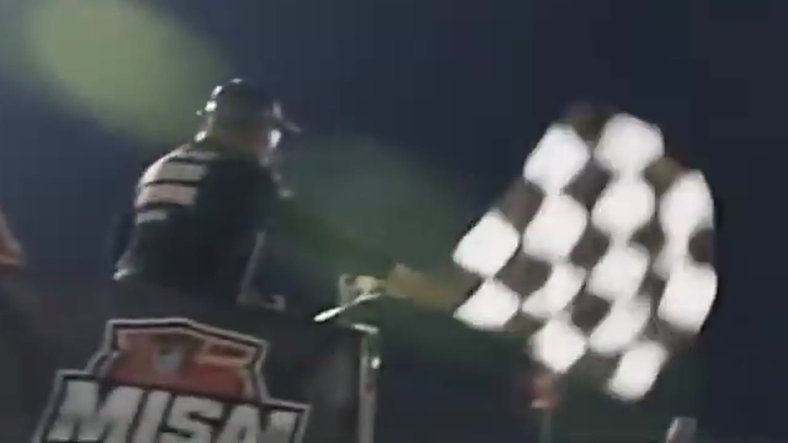

Bowman Outlasts Iowa
Trevor Haley took the stage, but Nick Bowman survived a 23-caution night to beat his teammate and Cory Cook.

Nick Bowman won an Iowa race that HLRN says required 23 cautions to finish. The number transformed the night into a sequence of launches rather than one continuous contest: accelerate, defend, survive, reset. Trevor Haley started from the head of the Season 2 grid and won the supported stage, but Bowman beat his teammate when the final side-by-side run at last reached the checkered. Cory Cook finished third after enduring the same broken rhythm.
The opening green ended almost immediately in an unresolved caution. That first interruption established Iowa’s terms before a competitive pattern could form. Matt Brown appeared in the next replay, and a later incident saw the No. 18 wash up and turn Scott Wise. Central can describe the visible contact and its consequence without assigning motive or building a driver-by-driver incident score from a race-control sheet that has not been recovered.
Daryl Sabalos and Brian Hebert surfaced in another caution review. An unidentified spin produced the next yellow. By then, the leaders were learning that every advantage had an expiration measured in laps, not in fuel windows. Haley and Bowman nevertheless kept returning to the front, carrying the race’s central teammate battle through the middle phase.
Haley took the supported stage with Bowman second and Brandon Showers third in HLRN’s readout. The result extended Haley’s stage strength into a second season and kept both Darkhorse teammates positioned for the feature. It also gave the race one stable checkpoint inside a night otherwise defined by constant resets.
Matt Brown and Trace McDowell led another restart before wall contact brought out the next yellow. Bryce Hinton and Justin Crow later brought Iowa back to green, and Bowman fought Crow at the front. Haley and Cody Neagles appeared in the next caution replay, another interruption that forced the champion to recover his route toward Bowman.
McDowell and Joshua McKenna carried a later lead battle, showing how widely the short green runs had distributed opportunity. A blinking caution then forced HLRN to rebuild the top five yet again. Drivers who had not been part of the stage order could briefly inherit the front; drivers who had controlled it needed another launch to regain position.
Bowman’s advantage was not the ability to avoid every reset. It was the ability to keep recreating a route to the high lane after each one. Haley did the same from the opposite side of the teammate battle, using the stage as proof that he could still convert a short run into a scoring result. Cook’s path developed behind them. He did not need to lead the caution count or the stage; he needed to stay attached to the two cars most likely to settle the last restart.
By the twenty-third caution, strategy in the conventional sense had almost disappeared. Fuel windows and long-run tire falloff could not organize a race that rarely stayed green long enough to reward them. Lane choice, restart timing, and the first clean corner became the available tools. Bowman chose the line that preserved momentum, Haley chose the line that kept him alongside, and Cook remained close enough that one failed launch ahead could turn third into something larger.
The decisive run finally placed Bowman and Haley together. Bowman held the high lane while Haley worked alongside, and Cook closed behind them. Unlike the previous 22 interruptions, the final sequence lasted long enough to produce a result. Bowman crossed ahead of Haley and received the confirmed winner call.
HLRN read the podium as Bowman, Haley, Cook. Cook’s post-race reflection supplied the perspective of a driver who had survived the caution-heavy route to third. The exact order behind him and the official incident ledger remain open, but neither omission changes the supported top three or the channel-reported caution total.
Cook’s third place gives the finish a needed measure beyond the teammates. He stayed within the last lead group while 23 cautions repeatedly invited different drivers to the front, then remained close when Bowman and Haley finally ran side by side without another immediate reset. His podium does not prove where he ran during every interrupted segment. It proves that when continuity finally returned, Cook was the next car able to convert it into a supported position. That is a more useful measure of endurance than trying to rank every brief lead the cautions created. Iowa ultimately rewarded the three drivers who best converted the one green run that finally lasted.
Iowa’s story is not that every caution was equally important. It is that no driver could rely on continuity. Haley used repeated launches to win the stage and reach the final battle; Bowman used the last one to beat him; Cook stayed close enough to complete the podium. Twenty-three yellows fragmented the race, but they did not blur its finish. When HLRN finally stopped resetting the field, Bowman was the driver still in front.
Receipts behind the report
These links open the exact HLRN source windows used by the editorial file.
- OPENING · RECORD
Iowa's race shape is 23 cautions
The companion opens by naming the extraordinary caution total.
▶ 0:20 SOURCE WINDOW - MIDDLE · STAGE
The champion takes the Iowa stage
Trevor Haley holds Nick Bowman and Brandon Showers through the stage line.
▶ 1:22 SOURCE WINDOW - CLOSING · BATTLE
The Darkhorse pair settles it side by side
Bowman and Haley race alongside one another while Cory Cook closes behind them.
▶ 3:59 SOURCE WINDOW - CLOSING · RESULT
Bowman returns with an Iowa win
Nick Bowman records P1 ahead of Trevor Haley and Cory Cook.
▶ 5:12 SOURCE WINDOW
The podium is supported by HLRN's companion read. The caution count is channel-reported, not reconstructed from an official incident ledger.